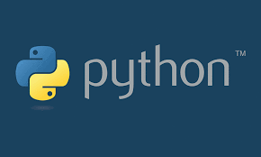
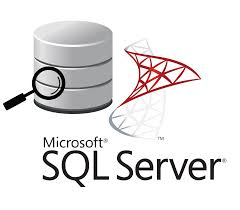

This serves as the central hub where I keep all my Python projects, this repository encompasses of a variety of analytical and web
scraping projects. It offers a unified space for managing and accessing these projects effortlessly. Acting as the nucleus for my
Python-related activities, this repository provides a streamlined and organized platform for working on and presenting a range of
data-driven initiatives.

Within the scope of these projects, my focus revolves around employing SQL-based techniques to enhance the quality,
accuracy, and integrity. Through systematic data cleaning processes and SQL functionalities, these projects encompasses
various in-depth data exploration cleansing and analyzing methodologies within the SQL environment. I aimed to uncover
patterns, trends, and significant information pertaining to contributing to a more comprehensive understanding of the
dataset's nuances and facilitating informed decision-making.
This serves as the central location where I keep all my MS Excel projects and dashboards. It acts as a repository for my different
Excel and analytical projects, providing a unified space for managing and accessing them efficiently. This hub serves as the focal
point for my Excel-related activities, offering a convenient and orderly platform for working on and presenting a variety of
data-driven initiatives.
This is the location where I store all of my Tableau dashboards. All of the visualizations and data representations
I have created using Tableau are housed within this space. It serves as a centralized repository for easy access and
management of the various dashboards I have designed for data analysis and presentation. This designated area is essentially
the hub for organizing and storing my Tableau-related work, providing a convenient and structured environment for efficient
navigation and utilization of the visualizations I have crafted.
This is the centralized location where I store all of my Power BI projects and dashboards. It serves as the repository
for my various data visualization and analytical undertakings, offering a consolidated space to manage and access these
projects seamlessly. This repository acts as the hub for my Power BI-related endeavors, providing a convenient and
organized platform to work on and showcase diverse data-driven initiatives.